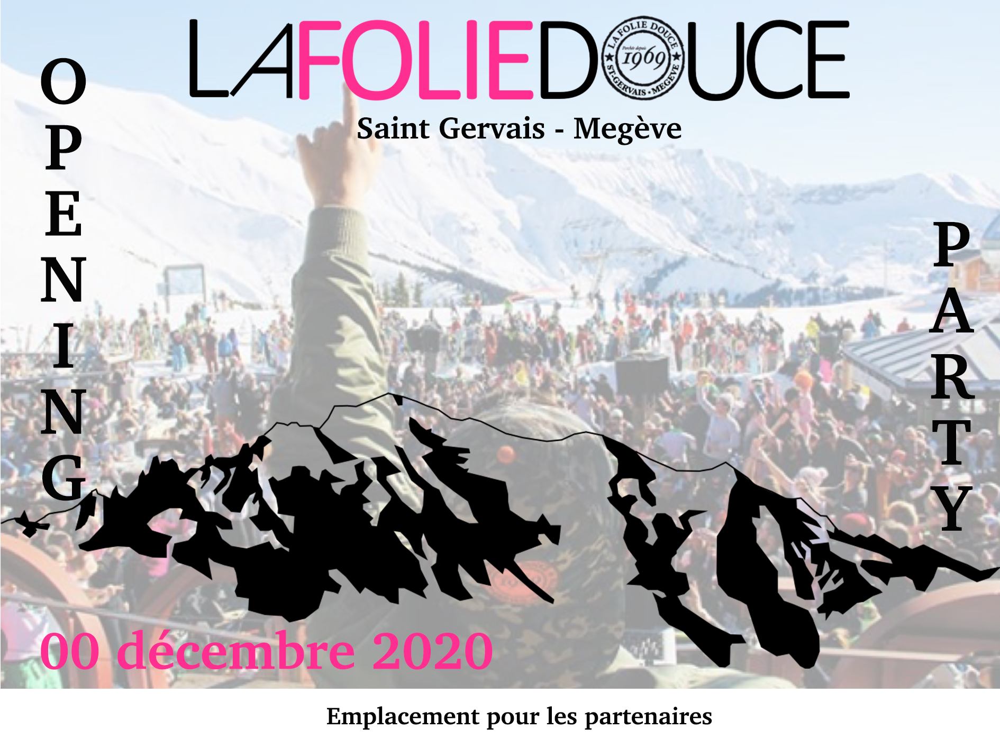

Dans le cadre d'une recherche de stage, on m'a demandé de réaliser une affiche pour promouvoir un futur événement. Simple et épuré, cette affiche ne contient que les informations essentielle.
Au fil de mes recherches, j’ai noté dans les différentes publications concernant La Folie Douce que le rose est une couleur récurrente. Pour cela, je l’ai choisie pour le visuel. Au-delà de ça, le rose est une couleur qui représente bonheur, charme et beauté. Le graphisme du visuel a été réalisé sur Photoshop et Powerpoint.
Concernant la photo, j’ai choisi une photo sur le compte Intagram de la Folie Douce que j’ai mis en transparence. Enfin, sur la partie basse du visuel, il y a un emplacement spécifique pour la date, ainsi que pour les sponsors.
Ci-dessous, vous pourrez visionner l'affiche dont-il s'agit.
